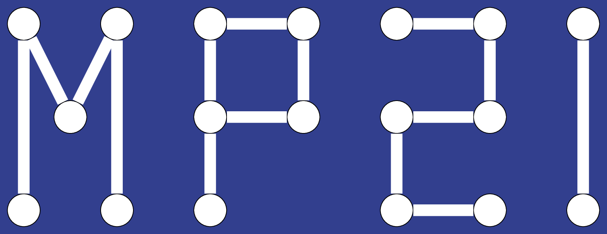

Cours d'informatique en MP2I
Complexité
Initializing search
GitHub
OCaml
Analyse de programme
Structures linéaires
C
Arbres
Graphes
Algorithmique
Algorithmique du texte
Logique
SQL
Cours d'informatique en MP2I
GitHub
OCaml
OCaml
Cours
Cours
Variables
Fonctions
Conditions
Récursivité
Structures de données persistantes
Boucles
Tableaux et chaînes de caractères
Types construits
None
Exercices
Exercices
TP 1 : Types, variables, fonctions
TP 2 : Récursivité et conditions
TP 3 : Structures persistantes
TP 4 : Listes
TP 5 : Tableaux et complexité
TP 6 : Types construits
Analyse de programme
Analyse de programme
Cours
Cours
Complexité
Preuve de programme
Tests
Compléments de complexité
Exercices
Exercices
TD preuve de programme
Structures linéaires
Structures linéaires
Cours
Cours
Liste, tableau, pile, file
Dictionnaire et table de hachage
Exercices
Exercices
TD 1 : pile et file
TD 2 : listes doublements chaînées
TD 3 : cycle dans une liste chaînée
TD 4 : table de hachage
C
C
Cours
Cours
Variables et nombres
Représentation des entiers
Représentation des flottants
Conditions et boucles
Fonctions
Pointeurs
Structures
Tableaux
Compilation
Chaînes de caractères
Tableaux multidimensionnels
Exercices
Exercices
TP 1 : Implémentation d'ensemble par représentation binaire (bit field)
TP 2 : Listes chaînées
TP 3 : Représentation binaire
TP 4 : Tableaux dynamiques
TP 5 : Chaînes de caractères
TP 6 : Utilisation du terminal sous Linux
TP 7 : Fichiers
TP 8 : Sudoku
TP 9 : Réécriture de commandes du terminal
Arbres
Arbres
Cours
Cours
Arbre binaire
Parcours d'arbre
Arbre binaire de recherche
Arbre binaire de recherche équilibré
File de priorité et tas
Exercices
Exercices
TP 1 : Arbres binaires
TD 2 : Preuves sur les arbres
TP 3 : Arbres
TD 4 : Parcours et arbre binaire de recherche
TD 5 : Arbre binaire de recherche équilibré
TP 6 : Arbre de segments et ancêtre commun
TD 7 : File de priorité et tas
TD 8 : Arbre croissant (X-ENS 2014)
Graphes
Graphes
Définitions
Représentations
Parcours
Plus courts chemins
Cours de graphes en info commune (Python)
TP/TD
TP/TD
TD 1 : Définitions
TD 2 : Représentations et parcours
TD 3 : Plus courts chemins
Concours Mines-Pont 2016
TP : Plus courts chemins et programmation dynamique
Algorithmique
Algorithmique
Cours
Cours
Algorithmes gloutons
Diviser pour régner
Programmation dynamique
Exercices
Exercices
TD 1 : Algorithmes gloutons et diviser pour régner
TD 2 : Programmation dynamique
Algorithmique du texte
Algorithmique du texte
Cours
Cours
Recherche de mot dans un texte
Compression de texte
Code : Compression de texte
Exercices
Exercices
TD : Algorithmique sur les chaînes de caractères
TP : Benchmark pour la recherche de sous-mot
Mines Pont 2022
Logique
Logique
Cours
Cours
Logique propositionelle : Syntaxe
Logique propositionelle : Sémantique
Problème SAT
Algorithme de Quine et backtracking
Code : Formules logiques
Exercices
Exercices
TD Logique 1
X-ENS 2016 : Problème 2-SAT
X-ENS 2016 (Problème SAT) : Corrigé
Utilisation d'un solver (minisat)
SQL
SQL
Cours
Cours
Cours 1 : Une seule table
Cours 2 : Plusieurs tables
Cours 3 : GROUP BY
Cours 4 : SELECT imbriqués
Cours 5 : Modèle entité-association
Résumé
Exercices
Exercices
Exercices SQL en ligne
Exemple : SDSS (objets célestes)
Exercices SQL Zoo
Énigme à résoudre en SQL
Back to top